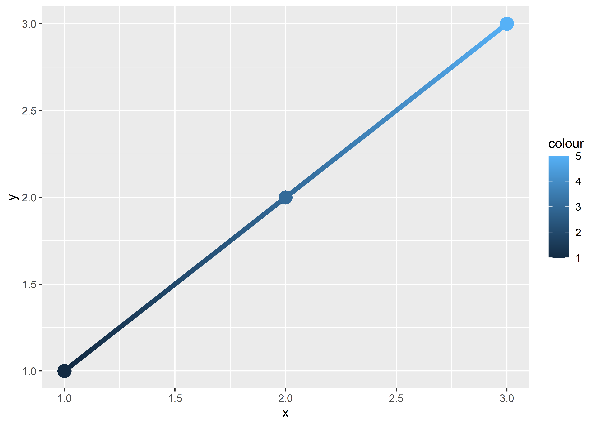

data(Oxboys, package = "nlme")
head(Oxboys)
#> Subject age height Occasion
#> 1 1 -1.0000 140 1
#> 2 1 -0.7479 143 2
#> 3 1 -0.4630 145 3
#> 4 1 -0.1643 147 4
#> 5 1 -0.0027 148 5
#> 6 1 0.2466 150 64 Collective geoms
You are reading the work-in-progress third edition of the ggplot2 book. This chapter is currently a dumping ground for ideas, and we don’t recommend reading it.
Geoms can be roughly divided into individual and collective geoms. An individual geom draws a distinct graphical object for each observation (row). For example, the point geom draws one point per row. A collective geom displays multiple observations with one geometric object. This may be a result of a statistical summary, like a boxplot, or may be fundamental to the display of the geom, like a polygon. Lines and paths fall somewhere in between: each line is composed of a set of straight segments, but each segment represents two points. How do we control the assignment of observations to graphical elements? This is the job of the group aesthetic.
By default, the group aesthetic is mapped to the interaction of all discrete variables in the plot. This often partitions the data correctly, but when it does not, or when no discrete variable is used in a plot, you’ll need to explicitly define the grouping structure by mapping group to a variable that has a different value for each group.
There are three common cases where the default is not enough, and we will consider each one below. In the following examples, we will use a simple longitudinal dataset, Oxboys, from the nlme package. It records the heights (height) and centered ages (age) of 26 boys (Subject), measured on nine occasions (Occasion). Subject and Occasion are stored as ordered factors.
4.1 Multiple groups, one aesthetic
In many situations, you want to separate your data into groups, but render them in the same way. In other words, you want to be able to distinguish individual subjects, but not identify them. This is common in longitudinal studies with many subjects, where the plots are often descriptively called spaghetti plots. For example, the following plot shows the growth trajectory for each boy (each Subject):
ggplot(Oxboys, aes(age, height, group = Subject)) +
geom_point() +
geom_line()If you incorrectly specify the grouping variable, you’ll get a characteristic sawtooth appearance:
ggplot(Oxboys, aes(age, height)) +
geom_point() +
geom_line()If a group isn’t defined by a single variable, but instead by a combination of multiple variables, use interaction() to combine them, e.g. aes(group = interaction(school_id, student_id)).
4.2 Different groups on different layers
Sometimes we want to plot summaries that use different levels of aggregation: one layer might display individuals, while another displays an overall summary. Building on the previous example, suppose we want to add a single smooth line, showing the overall trend for all boys. If we use the same grouping in both layers, we get one smooth per boy:
ggplot(Oxboys, aes(age, height, group = Subject)) +
geom_line() +
geom_smooth(method = "lm", se = FALSE)
#> `geom_smooth()` using formula = 'y ~ x'This is not what we wanted; we have inadvertently added a smoothed line for each boy. Grouping controls both the display of the geoms, and the operation of the stats: one statistical transformation is run for each group.
Instead of setting the grouping aesthetic in ggplot(), where it will apply to all layers, we set it in geom_line() so it applies only to the lines. There are no discrete variables in the plot so the default grouping variable will be a constant and we get one smooth:
ggplot(Oxboys, aes(age, height)) +
geom_line(aes(group = Subject)) +
geom_smooth(method = "lm", linewidth = 2, se = FALSE)
#> `geom_smooth()` using formula = 'y ~ x'4.3 Overriding the default grouping
Some plots have a discrete x scale, but you still want to draw lines connecting across groups. This is the strategy used in interaction plots, profile plots, and parallel coordinate plots, among others. For example, imagine we’ve drawn boxplots of height at each measurement occasion:
ggplot(Oxboys, aes(Occasion, height)) +
geom_boxplot()There is one discrete variable in this plot, Occasion, so we get one boxplot for each unique x value. Now we want to overlay lines that connect each individual boy. Simply adding geom_line() does not work: the lines are drawn within each occasion, not across each subject:
ggplot(Oxboys, aes(Occasion, height)) +
geom_boxplot() +
geom_line(colour = "#3366FF", alpha = 0.5)To get the plot we want, we need to override the grouping to say we want one line per boy:
ggplot(Oxboys, aes(Occasion, height)) +
geom_boxplot() +
geom_line(aes(group = Subject), colour = "#3366FF", alpha = 0.5)4.4 Matching aesthetics to graphic objects
A final important issue with collective geoms is how the aesthetics of the individual observations are mapped to the aesthetics of the complete entity. What happens when different aesthetics are mapped to a single geometric element?
In ggplot2, this is handled differently for different collective geoms. Lines and paths operate on a “first value” principle: each segment is defined by two observations, and ggplot2 applies the aesthetic value (e.g., colour) associated with the first observation when drawing the segment. That is, the aesthetic for the first observation is used when drawing the first segment, the second observation is used when drawing the second segment and so on. The aesthetic value for the last observation is not used:
df <- data.frame(x = 1:3, y = 1:3, colour = c(1, 3, 5))
ggplot(df, aes(x, y, colour = factor(colour))) +
geom_line(aes(group = 1), linewidth = 2) +
geom_point(size = 5)
ggplot(df, aes(x, y, colour = colour)) +
geom_line(aes(group = 1), linewidth = 2) +
geom_point(size = 5)
On the left — where colour is discrete — the first point and first line segment are red, the second point and second line segment are green, and the final point (with no corresponding segment) is blue. On the right — where colour is continuous — the same principle is applied to the three different shades of blue. Notice that even though the colour variable is continuous, ggplot2 does not smoothly blend from one aesthetic value to another. If this is the behaviour you want, you can perform the linear interpolation yourself:
xgrid <- with(df, seq(min(x), max(x), length = 50))
interp <- data.frame(
x = xgrid,
y = approx(df$x, df$y, xout = xgrid)$y,
colour = approx(df$x, df$colour, xout = xgrid)$y
)
ggplot(interp, aes(x, y, colour = colour)) +
geom_line(linewidth = 2) +
geom_point(data = df, size = 5)
An additional limitation for paths and lines is worth noting: the line type must be constant over each individual line. In R there is no way to draw a line which has varying line type.
What about other collective geoms, such as polygons? Most collective geoms are more complicated than lines and path, and a single geometric object can map onto many observations. In such cases it is not obvious how the aesthetics of individual observations should be combined. For instance, how would you colour a polygon that had a different fill colour for each point on its border? Due to this ambiguity ggplot2 adopts a simple rule: the aesthetics from the individual components are used only if they are all the same. If the aesthetics differ for each component, ggplot2 uses a default value instead.
These issues are most relevant when mapping aesthetics to continuous variables. For discrete variables, the default behaviour of ggplot2 is to treat the variable as part of the group aesthetic, as described above. This has the effect of splitting the collective geom into smaller pieces. This works particularly well for bar and area plots, because stacking the individual pieces produces the same shape as the original ungrouped data:
ggplot(mpg, aes(class)) +
geom_bar()
ggplot(mpg, aes(class, fill = drv)) +
geom_bar()If you try to map the fill aesthetic to a continuous variable (e.g., hwy) in the same way, it doesn’t work. The default grouping will only be based on class, so each bar is now associated with multiple colours (depending on the value of hwy for the observations in each class). Because a bar can only display one colour, ggplot2 reverts to the default grey in this case. To show multiple colours, we need multiple bars for each class, which we can get by overriding the grouping:
ggplot(mpg, aes(class, fill = hwy)) +
geom_bar()
#> Warning: The following aesthetics were dropped during statistical transformation: fill.
#> ℹ This can happen when ggplot fails to infer the correct grouping structure in
#> the data.
#> ℹ Did you forget to specify a `group` aesthetic or to convert a numerical
#> variable into a factor?
ggplot(mpg, aes(class, fill = hwy, group = hwy)) +
geom_bar()
In the plot on the right, the “shaded bars” for each class have been constructed by stacking many distinct bars on top of each other, each filled with a different shade based on the value of hwy. Note that when you do this, the bars are stacked in the order defined by the grouping variable (in this example hwy). If you need fine control over this behaviour, you’ll need to create a factor with levels ordered as needed.
4.5 Exercises
Draw a boxplot of
hwyfor each value ofcyl, without turningcylinto a factor. What extra aesthetic do you need to set?Modify the following plot so that you get one boxplot per integer value of
displ.ggplot(mpg, aes(displ, cty)) + geom_boxplot()When illustrating the difference between mapping continuous and discrete colours to a line, the discrete example needed
aes(group = 1). Why? What happens if that is omitted? What’s the difference betweenaes(group = 1)andaes(group = 2)? Why?How many bars are in each of the following plots?
ggplot(mpg, aes(drv)) + geom_bar() ggplot(mpg, aes(drv, fill = hwy, group = hwy)) + geom_bar() library(dplyr) mpg2 <- mpg %>% arrange(hwy) %>% mutate(id = seq_along(hwy)) ggplot(mpg2, aes(drv, fill = hwy, group = id)) + geom_bar()(Hint: try adding an outline around each bar with
colour = "white")Install the babynames package. It contains data about the popularity of baby names in the US. Run the following code and fix the resulting graph. Why does this graph make us unhappy?
library(babynames) hadley <- dplyr::filter(babynames, name == "Hadley") ggplot(hadley, aes(year, n)) + geom_line()